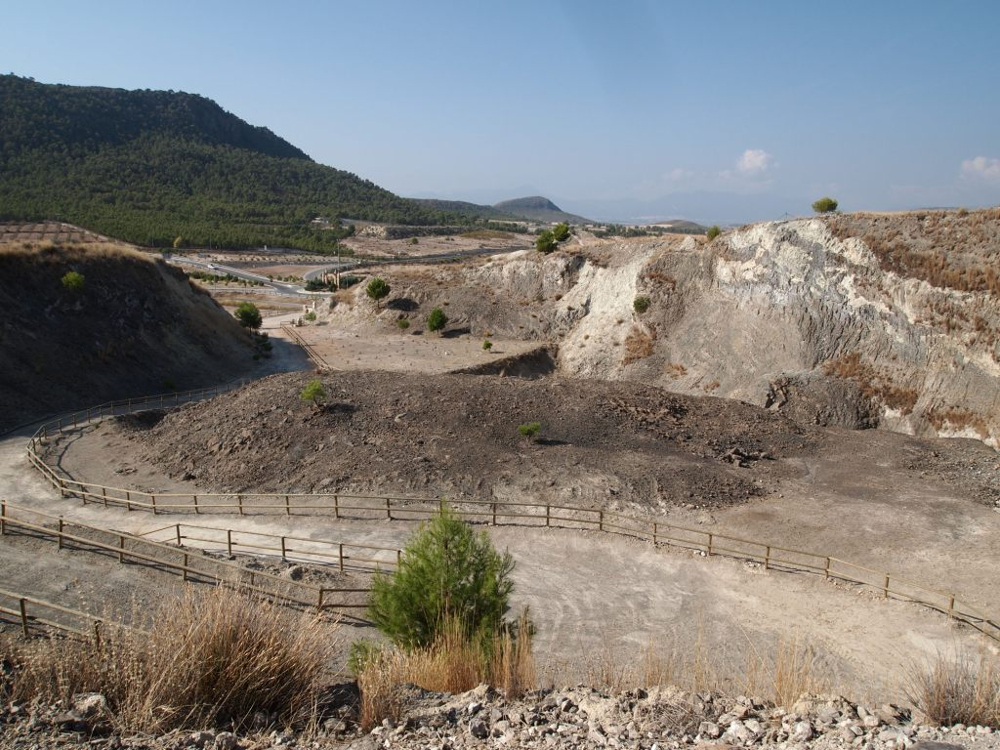

El Cerro Negro de Calasparra es un pequeño cono volcánico achatado de la Región de Murcia, en el municipio de Calasparra. Al NO de la capital municipal, casi a la entrada del cortijo de Benefudre. El volcán tiene unos 400 m de largo y unos 225 m de ancho, y con un cráter de 80 m de diámetro (regla de Google Earth). Está formado de rocas lamproitas, y en el interior del cráter; se encuentra un conjunto de columnas basálticas.
El Cerro Negro está propuesto como Lugar de interés geológico español de relevancia internacional (Global Geosite) por el Instituto Geológico y Minero de España por su interés petrológico, con la denominación: Edificio volcánico de Calasparra, dentro del contexto geológico Vulcanismo neógeno y cuaternario de la península ibérica